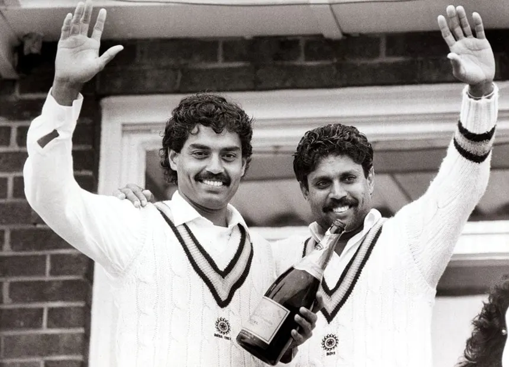

Sachin Tendulkar
==> Known as the 'Master Blaster', he is regarded as one of the
greatest batsmen in cricket history <==
--> click here to see Overview of Sachin Ramesh Tendulkar :-
Overview
-->Famous Shot: Straight Drive
click here to see sachin shot
Kapil Dev
==> A legendary all-rounder and captain who led India to its first
World Cup victory in 1983 <==


--> click here to see Overview of kapildev shot :-
Overview
Famous Shot: Hook Shot
click here to see Kapil shot
Sourav Ganguly
Former captain known for his aggressive leadership and left-handed
batting.
Stats
Famous Shot: Cut Shot
click here to see Ganguly shot
Rahul Dravid
The 'Wall' of Indian cricket, known for his technique and solid batting.
Stats
Famous Shot: Forward Defense
click here to see Dravid shot
Virat Kohli
Former captain and one of the top run-scorers in modern cricket.
Stats
Famous Shot: Cover Drive
click here to see king Kohli greatest shot
click here to see king Kohli shot
M.S. Dhoni
One of the greatest finishers in cricket history and former captain of the
Indian team.
Stats
Famous Shot: Helicopter Shot
click here to see Dhoni shot
Anil Kumble
One of the finest spin bowlers in cricket history, known for his unique
bowling style.
Stats
Famous Bowling Style: Leg Break Googly
click here to see kumble Googly style
Sunil Gavaskar
One of the greatest opening batsmen, known for his technique and
temperament.
Stats
Famous Shot: late Flick
click here to see Gavaskar shot
Yuvraj Singh
Known for his explosive batting and being a key player in India's 2007 T20
World Cup and 2011 ODI World Cup wins.
Stats
Famous Shot: Six-Hitting
click here super sixes
Irfan Pathan
An all-rounder known for his swing bowling and explosive batting.
Stats
Famous Shot: Upper Cut
Rahul Dravid
The 'Wall' of Indian cricket, known for his technique and solid batting.
Stats
Famous Shot: Forward Defense

VVS Laxman
Known for his elegant batting style and match-winning performances,
especially in Test cricket.
Stats
Famous Shot: Square Cut